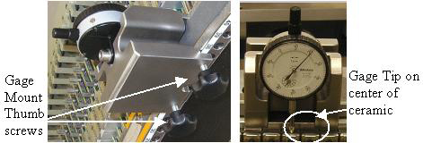
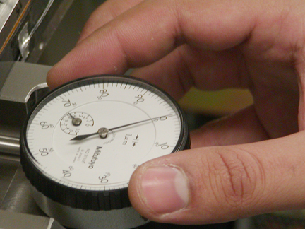
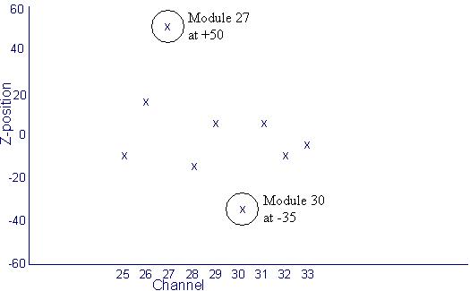

Operating Documentation
Direction 5307452-8EN, Rev# 4
Discovery CT750 HD Service Methods - Adv
Operating Documentation |
The Dial gage tool can be used to help manually adjust center location modules (slots 27-31) that may not easily go into alignment using just the bias tool. The dial gage is available from the Tool Depot.
This procedure assumes you have installed a center module (27-31), checked the alignment and found that the module alignment did not meet specifications after a second try using the bias tool. At this point you have two options. If you have the module alignment gage, this procedure defines how to use it. If you don’t have the alignment gage, you will need to shift the module slightly by hand to see if you can position it within specifications.
| NOTE: | Please read through this procedure completely before beginning. |
| Last Revised | May 30, 2008 |
Save the last alignment scan run for future reference. To save the alignment scan data output run the following commands from a Unix Shell:
cd /usr/g/service/state cp CCal_small_32x0.625.sprp CCal_small_32x0.625.sprp.baseline
Do not change the existing base filename, only add something on the end. In the above example we added “.baseline” to the end of the filename. You could also use a date/time format if desired such as “.9Jan06_1400” to indicate the file was saved on January 9th at 2PM.
To pull up the baseline plot data at a later time run the following command:
run_modalign /usr/g/service/state/CCal_small_32x0.625.sprp.baseline
This will open a plot window that can be left open to compare to the plot from an alignment scan after module re-alignment.
1. Turn the system OFF and remove plenum, light seal cover plate, and screw cover bands as shown in the module replacement procedure.
2. Attach the Module adjust tool to the detector rail such that the tip of the gage is aligned to the center of the ceramic substrate on the module to be moved as shown in Illustration 1.
Illustration 1: 64 slice Dial Gage attachment

3. Tighten the thumbscrews on the back of the fixture enough to prevent any movement. Gently wiggle the mount block to make sure the gage reading does not shift around more than 2-3 microns. This makes sure the gage is tight on the rail.
4. Turn dial scale to set the current position as zero. (see Illustration 2) Retract the tip of the dial with your fingers to get a sense for the direction the indicator will turn when you move the module. Notice that there is one large and one small dial. The large dial has large and small numbers. Each division on the large dial is a micron. The small dial counts number of turns from the large dial scale.
Illustration 2: 64 slice Dial gage zero position

5. Take note of the reading on the small dial. This needle should stay within one unit after an adjustment less than 100 microns.
Loosen the module to allow it to move using the following steps.
Unscrew the digital cable screws and pull them out to release the cable from the backplane same as if you were removing the module.
Remove light seal clips (if existing) and the wedge lock clamp.
Note the reading on the small dial of the gage in case the module moves more than 100 microns after loosening the module screws.
Loosen the two module mounting screws starting with the front screw (closest to you). Check the small dial gage to make sure the module did not move by more than 100 microns. If it did, you must take this into account for repositioning.
Read the zalignmentWizard graph to determine the necessary adjustment.
For positive misalignment move the module towards the operator (table side). Any negative misalignment should be treated with much care as this is moving toward the back rail. The module may already be against the back rail.
The example in Illustration 3 shows Module 27 at +50 microns and Module 30 is at –35 microns. Assuming the specification is 48 microns for module 27 and 31 you should attempt to move module 27 about 50 microns to guarantee best alignment possible. Assuming the specification is 32 microns for modules 28,29,30, you only need a minimum of 3 microns movement to get the module into specification. Since the negative reading means the module must be pushed toward the back rail, a gentle push on the module can achieve this even if the module is already against the back rail.
DO NOT PUSH modules hard towards the back rail. This can damage the alignment pins. Modules requiring this adjustment should be reseated first then retested for alignment. Do not attempt to make a negative adjustment of more than minus 7 microns by applying force. If this does not work the module may need to be replaced with a new one.
Adjustments in the positive direction virtually have no limit but adjustments in the negative direction are limited to minus 7 microns.
Tighten the module mounting Back Screw First. Then tighten the front screw.
Illustration 3: Example Plot

3. Reinstall the wedge lock clamp, light seal clips and digital cable screws.
4. Replace the light seal cover plate, plenum and reconnect cabling.
| NOTE: | Be careful not to pinch the thermistor wires when installing the light seal plate. |
Rerun the zalignmentWizard to confirm module alignment is now within specification.
To save the new alignment plot scan data output run the following commands from a Unix Shell:
cd /usr/g/service/state cp CCal_small_32x0.625.sprp CCal_small_32x0.625.sprp.xxxxx (xxxxx=time or date/time for tracking)
Note: to pull up the plot data at a later time run the following command:
run_modalign /usr/g/service/state/CCal_small_32x0.625.sprp.xxxxx (use whatever suffix was added to the base file name)
Tighten all bolts and cables on plenum to specified torque.
Continue with the module Dastools tests, calibrations and IQ retests as defined in the module replacement procedure.